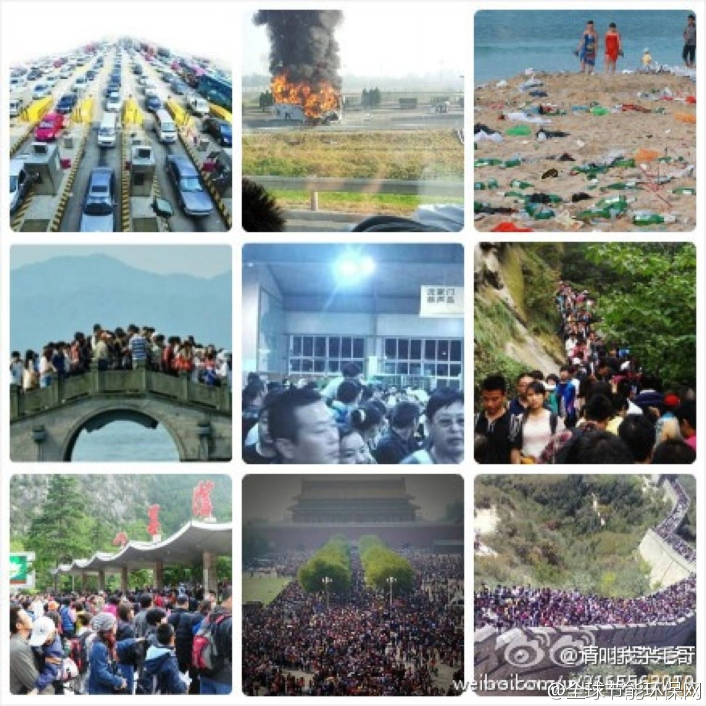
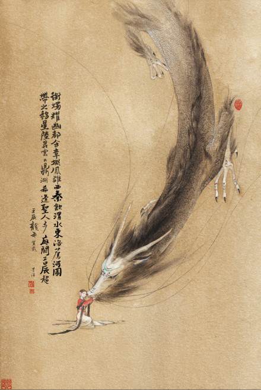

车队里有家长还带着笔记本，甚至有一家父母各一个，据说iPad没找到，不然也带来了。没想到山里所谓四星酒店没上网设备。我用手机的便携式WiFi热点共享帮着解决了一家长的收邮件难题。但一直也在想，出来旅游，带笔记本，iPad之类利大弊大?
节后统计消费再创新高//@许小年: 1. 取消黄金周，错峰放假 。2. 车、船、机、门票、路费、酒店等旅游设施价格随行就市，禁止任何形式的行政管制。价格机制的首要和最重要作用是配置稀缺资源。用纳税人的钱修路是否应收费、政府垄断旅游资源、如何让利于民是不同的问题，应分开讨论。减税是更好的办法。@全球节能环保网:华山数万人滞留；普陀山2万多人滞留；丽江上万游客找不到住处；大梅沙海滩人多得看不到沙子；三亚海滩成垃圾场；鼓浪屿“沦陷”；西湖见人不见桥；黄山游客爆满；九寨沟深夜12点赴沟道路纹丝不动，故宫人山人海，长城不分内外。（图片来自：@胡传春V） 
下午车队本来的安排是乘索道上山，沿途逛一些景点。听到索道就没兴致，不去。午饭后先在房间睡个午觉，然后与俩家长带孩子出门随意遛达，竟然发现很不错的地方，一路溪水流瀑，因为临近傍晚，人也不多。自驾游自助游的优势不就是想玩就玩，想歇就歇嘛。
之前请教星耀职业发展，他问了个问题: 你去旅行时，是做好充分计划和准备，还是走到哪里算哪里? 我觉得两个都不符合，回答说80%计划，20%机动。人最搞不清的就是自己了，像这次自驾游，组织者开始说去山东，我说好。没几天说改山西，我也说好。至于行程如何，一概不关心，走哪儿算哪儿，开心就好。
这么看来，古代女子出嫁后已经算不上人了，连称谓分类都没有。男子正相反。//@吴杰_FUJITSU:【各年龄称谓】 女子：12岁称金钗之年，13岁称豆蔻年华，15岁称及笄之年，16岁称碧玉年华，20岁称桃李年华，24岁称花信年华，出嫁女子称梅之年；男子：20岁称弱冠，30岁称而立，40岁称不惑，50岁称知天命，@神器挖掘机:【各年龄称谓】 女子：12岁称金钗之年，13岁称豆蔻年华，15岁称及笄之年，16岁称碧玉年华，20岁称桃李年华，24岁称花信年华，出嫁女子称梅之年；男子：20岁称弱冠，30岁称而立，40岁称不惑，50岁称知天命，60岁称耳顺。70岁称古稀，80岁称杖朝。90岁称合耄耋。100岁称乐期颐。你现在是什么称谓？ 
这次出游姣姣自己提出要带上作业本。今天晚饭后她没去找小朋友玩，而是主动说要写作业，我惊奇她的自觉。但一会儿小朋友就露马脚了，烦躁，摔书本，半天也没什么进展。带她冲个澡，情绪好多了，然后她又拿起书本，没几分钟就睡着了。
这次出游，几个妈妈提到姣姣很听话，说还是女孩子好，不淘气。其实我一直很反对用听话要求孩子的，而且也从不认为女孩子天生就比男孩子乖。但姣姣屡次获得听话评价，我只能归结到天生的气质原因，姣姣从小就是很好带，带过她的几个保姆也都这么说，我是个很有运气的妈妈。[呵呵]